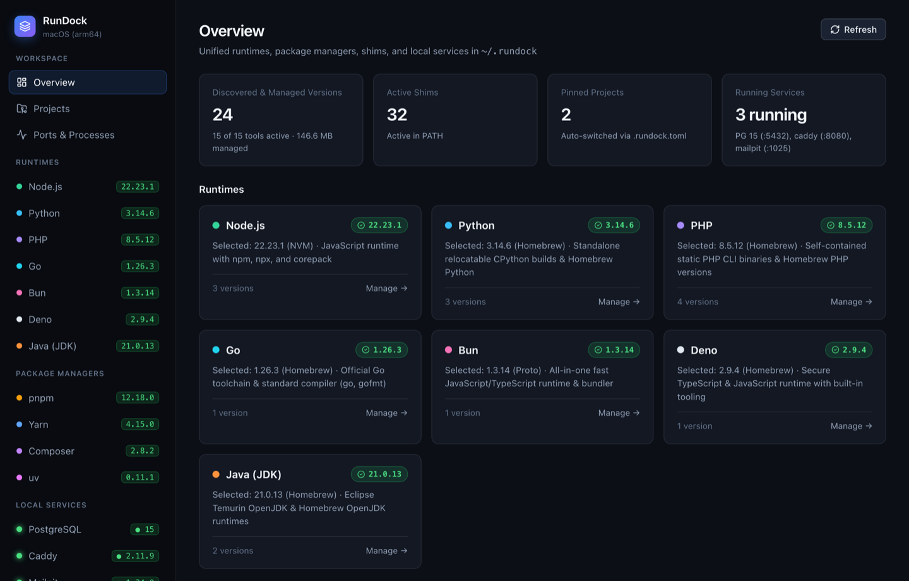

bunthondev.github.io/RunDockRunDock
Dev Environmentv0.1.0 · Rust + Tauri v2 · Apple Silicon
One fast Rust dock for every runtime & local service.
Manage multiple versions of Node.js, Python, PHP, Go, Bun, Deno, Java, package managers, and local PostgreSQL, Caddy, Mailpit & Nginx services from a single desktop app, macOS menu bar switcher, and PATH shim CLI.
- Auto-discovers Homebrew, NVM, Proto, Corepack & Postgres.app
-
Per-project auto-switching via
.nvmrc,.tool-versions&.rundock.toml - Live listening port & process monitor plus built-in command cheatsheets
15 Runtimes & Services
Menu Bar + CLI
MIT License